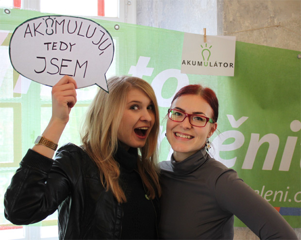

Dokážeš si své okolí a politiku představit jinak?
Staň se jedním z 20 mladých aktivních lidi z Česka ve věku 15 až 26 let a začni měnit Česko. Zúčastni se pěti víkendových školení v různých koutech České republiky a vydej se na mezinárodní setkání do Bruselu. Nepotřebuješ životopis plný zkušeností, důležitá je chuť začít zlepšovat Česko a Evropu. Začínáme na podzim 2015 a na jaře 2016 pojedeme společně s podobně smýšlejícími lidmi z Finska, Rakouska a Maďarska do Bruselu.
Co se na Akumulátoru můžeš naučit
Akumulátor realizuje Green European Foundation s podporou Institutu aktivního občanství a s finanční podporou Evropského parlamentu a Nadace Heinricha Bölla. Na tobě bude zaplatit si dopravu po Česku na místa víkendových školení (vždy v blízkosti krajských měst, dostupná vlakem, autobusem a MHD).
Každý účastník se musí zúčastnit všech fází Akumulátoru, tedy pěti víkendových školení, mezinárodní exkurze do Bruselu a zapojit se do praxe v mezifázi.
Jak na lokální, celostátní i evropskou politiku. Politické systémy a instituce prozkoumáme společně s politiky, aktivisty, novináři a experty, kteří za námi přijedou na školení a nebo je potkáme v Bruselu.
Zaměříme se na průřezová témata, jakými jsou otevřená společnost a přístup k informacím, ochrana lidských práv, rovná práva mužů a žen, podpora obnovitelných zdrojů energie a energetických úspor, ekologicky šetrná doprava, participace veřejnosti na rozhodování, inkluzivní vzdělávání, migrace a ochrana menšin, místní referenda, urbanismus a strategický rozvoj měst a další.
Probudíme tvůj smysl pro iniciativu a podpoříme tvé občanské schopnosti v oblasti projektového řízení, práce v týmu, na kampaních a s médii.
Poznáš další aktivní mladé lidi z ČR a v Bruselu se seznámíš se stejně aktivními lidmi z Finska, Rakouska a Maďarska.
Jaké jsou podmínky účasti
- věk 15- 26 let
- bydliště v ČR (ale nemusíš mít v Česku trvalý pobyt ani občanství)
- nepotřebuješ životopis plný zkušeností, důležitá je chuť být iniciativní
- musíš se zúčastnit všech fází školení, tedy pěti víkendových školení v ČR (30. 10. - 1. 11., 4. - 6. 12., 29. - 31. 1., 19. - 21. 2. a dubnový víkend), mezinárodní exkurze do Bruselu a zapojit se do praxe v mezifázi.
- do neděle 20. 9. vyplnit přihlášku
Kdy a o čem školení budou
1. školení: Akumulátor evropský, 30. 10. - 1. 11. 2015, Severní Čechy
Tématem prvního víkendu je Evropská unie. Nečekej ale powerpointové prezentace a statistické údaje. Budeme se bavit o skutečných rozhodovacích procesech, povedeme otevřenou debatu o kladech i záporech EU. Připojí se k nám hosté z Bruselu, kteří nám umožní nahlédnout do evropské politiky a fungování institucí. První setkání nás zároveň připraví na jarní exkurzi v Bruselu. A hlavně se staneš součástí týmu stejně výjimečných mladých lidí, jako jsi ty.
2. školení: Akumulátor lokální, 4. 12. - 6. 12. 2015, Jihomoravský kraj
Dozvíš se o aktivitách ostatních účastníků a seznámíš se s novými nápady, jak ovlivnit či dokonce změnit své okolí. Díky setkání s místními politiky a aktivisty budeš mít možnost porozumět tomu, co mají zastupitelé a radní na starost a jak to může ovlivnit běžný občan, třeba i student/ka.
3. školení: Akumulátor celostátní, 29. 1. - 31. 1. 2016, Praha
Pokud čteš tuhle výzvu, nejspíš už teď patříš mezi aktivní občany. Co všechno bys měl/a umět a znát, abys uspěl/a s tím, co se snažíš prosadit či změnit? Kde hledat informace a podporu? Připravíme tě na realizaci vlastního projektu a pomůžeme ti s jeho dašlím rozvíjením. Navštívíme senát a potkáme se se senátory a novináři, díky kterým pro tebe budou politický systém a strany v Česku brnkačka.
4. školení: Akumulátor občanský, 19. 2. - 21. 2. 2016, Vysočina
Čtvrté školení ti umožní vše nové vyzkoušet. Zkusíme si mediální cvičení před kamerou. Zažiješ, co to znamená být lídrem. Naučíš se, jak plánovat a řídit projekty a to hlavní: jak úspěšně pracovat v týmu.
Exkurze do Bruselu, březen 2016
Aktivistický akumulátor se současně odehrává ve Finsku, Rakousku, České republice a Maďarsku. Účastníci z těchto zemí se setkají na týdenní exkurzi v Bruselu, kde zjistí, co můžou prosazovat na evropské úrovni, jak působit v Evropském parlamentu a co to obnáší, přijímat nové zákony a směrnice. Budeme mít možnost nakouknout do zákulisí činnnosti mezinárodních a evropských institucí a organizací. Termín exkurze bude upřesněn během podzimu.
5. školení: Akumulátor a co dál?, duben 2016 po návratu z Bruselu
Posledním školení Akumulátor neskončí! Zaměříme se na plánování dalších aktivit, které už zvládneš jako mladý lídr sám/sama.
Kdo mě bude školit a jak
Program je postaven na setkáních s lidmi z praxe, tedy politiků, expertů a aktivistů, kteří budou na základě svých zkušeností seznamovat účastníky s politikou a veřejným děním. Školení i exkurzi budou facilitovat školitelky neformálního vzdělávání Klára Berg a Lela Bernátová, které několik let vzdělávají mladé lidi k aktivnímu občanství.
Metody neformálního vzdělávání učí prožitkem a zkoušením nových věcí. Kombinujeme je tak, aby v nich každý našel svůj oblíbený styl učení. Navíc se účastníci učí od sebe, ze svých zkušeností. Neformální vzdělávání nevede jen k novým informacím, ale také k osvojení praktických dovedností a přemýšlení nad hodnotami. Neznámkuje se, nezná roli učitele, je dobrovolné a účastníci jsou sami zodpovědní za to, co se naučí.
Kdo mi školení platí a kolik si na něj budu muset přispívat
Akumulátor realizuje Green European Foundation s podporou Institutu aktivního občanství a s finanční podporou Evropského parlamentu. Na školení dále přispívá Nadace Heinrich-Böll-Stiftung, na tobě bude zaplatit si cestování po Česku na místa víkendových školení. Exkurzi do Bruselu budou českým účastníkům financovat poslanci Evropského parlamentu finské a maďarské strany Zelených.
Musím se po školení stát členem politické strany?
Účast na školení není podmíněna politickou legitimací! Do Strany zelených ani jiné politické strany vstupovat v žádném případě nemusíš a působení v žádné politické straně není výhodou pro výběr účastníků. Školení organizuje Institut aktivního občanství, který se spolupracuje s politiky a političkami Strany zelených v tématech zapojování občanů do rozhodování obcí, ztransaprentění místní veřejné správy, podpoře žen v politice a dalších tématech “zelené politiky”. Zelenou politikou nemyslíme jen ochranu životního prostředí, ale i alternativní ekonomické přístupy, témata sociální, dopravní, lidsko-právní a další aktuální věci. Na školení se potkáš převážně se “zelenými” politiky a experty, tedy lidmi, kteří usilují o kvalitu života lidí a rozvoj občanské společnosti.
Jak se mohu přihlásit a kdy se dozvím výsledky
Jednou z podmínek účasti je vyplnění přihlášky do neděle 27. září.
V pátek 2. října ti dáme vědět, zda jsme tě na školení vybrali. Měj na paměti, že první víkendový seminář probíhá už na konci října a měl/a by sis ho proto rezervovat. Podmínkou účasti je účast na všech setkáních.
Na koho se mohu obrátit s dotazy
Koordinátorkou Akumulátoru je Klára Berg, klara@aktivniobcanstvi.cz, +420 736 435 829, která ví o Akumulátoru všechno a ráda ti odpoví na další otázky.